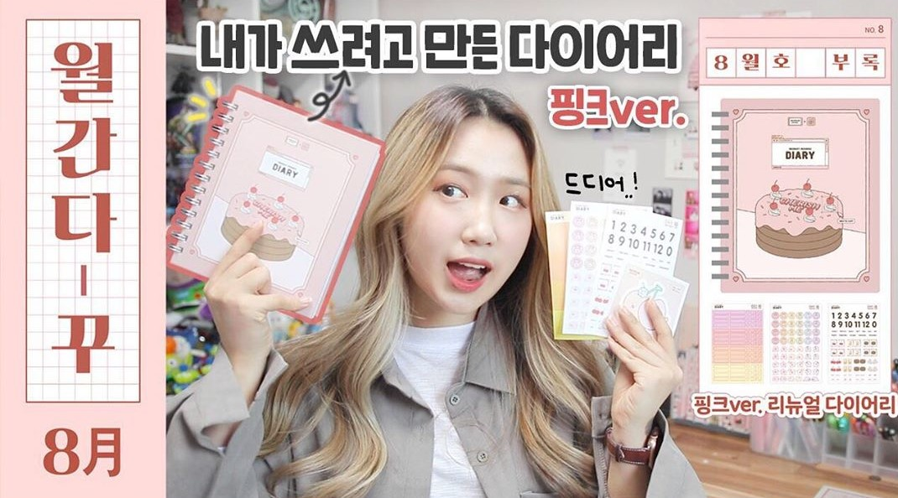

Youtube
#Youtube #유튜브 #Serim's life
소소하지만 소중한 세림의 일상!
다양한 컨텐츠를 가지고 2016년부터 활동하고 있는 유튜버이다.
소소하다고 이야기하지만, 상당히 재밌고 특별해보이는 세림의 삶이다.
취미로 직접 디자인한 다이어리나 스티커도 판매하고 있다.
Contents
- 유럽 vlog (유럽여행) My Pick!
- 월간 다꾸 (다이어리 꾸미기)
- 세림세끼 (자취생 하루 먹방vlog)
- 일상 vlog
세림의 가장 대표적 컨텐츠 중 하나!
매월마다 특별한 컨셉을 가지고
다이어리를 꾸미는 영상이다.
손재주가 정말 많아 꾸미는 걸 보는 재미가 있다.
